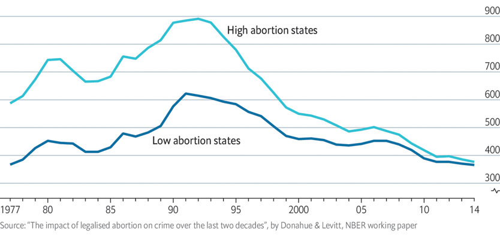

.png)
Gial Manzur noviembre del 2022
En todo el mundo, el aborto suele ser un tema controvertido. Un gran número de personas está en contra, mientras que otras creen que debería ser legal y estar disponible para quienes lo deseen. Pero, ¿qué dice la investigación al respecto? La respuesta podría sorprenderle.
Los datos muestran que existe una correlación significativa entre el aborto y los índices de criminalidad en los adultos jóvenes. Esto significa que cuando más mujeres abortan, hay menos delitos cometidos por jóvenes adultos. Esto podría deberse a que no tienen tantos hijos como si no hubieran abortado o a que es menos probable que cometan delitos si no tienen hijos.
Esto es confirmado en un estudio publicado en el Journal of Law and Economics, donde John Donohue y Steven Levitt afirman que una de las maneras que el aborto reduce el crimen es disminuyendo el número de personas, nacen menos individuos que lleguen a la adolescencia o los 20 años, edades donde se cometen la mayoría de los crímenes. Otra razón es porque aquellas mujeres que se realizan abortos tienen más riesgo de dar a luz niños más propensos a involucrarse en actividad criminal, ya que muchas se encuentran en situaciones de vulnerabilidad.
Para comprobarlo analizaron los datos de la Encuesta Longitudinal Nacional de la Juventud de 1979 (NLSY79) para determinar si existe una relación entre el número de abortos realizados durante la adolescencia de una mujer y la tasa de criminalidad en su edad adulta. Los autores descubrieron que cada aborto adicional realizado por una mujer durante su adolescencia se asocia con una disminución del 4% en su probabilidad de cometer un robo a mano armada o de entrar en un coche. También descubrieron que cada aborto adicional realizado por una mujer durante su adolescencia se asocia con una disminución del 8% en su probabilidad de cometer un asesinato u homicidio a lo largo de su vida.
El lector podría estar pensando que muchas veces la correlación no es igual a causalidad pero este estudio toma diferentes variables de control que también afectan la criminalidad para asegurarse que el cambio visto realmente está correlacionado con el aborto. se tomaron factores como la raza, la situación de pobreza, los ingresos del hogar y la situación laboral. Por lo que no hay duda que esta relación es real.

Como se puede ver en los datos de su investigación los estados con leyes de aborto más restrictivas tenían tasas de criminalidad más altas, mientras que los estados con leyes más permisivas tenían tasas de criminalidad más bajas. Los resultados sugieren que las políticas de aborto más estrictas pueden reducir la delincuencia. Aunque claro, el debate sobre el aborto va más allá de una visión utilitarista y se apoya en lo moral. Sin embargo, es importante verlo como parte de los beneficios que trae la maternidad deseada en la sociedad y nos ayuda también a comprender la diferencia entre las tasas de criminalidad de distintos lugares y se añade a una de las razones que estas tienen.
Esto no solo podría reconocer la importancia del aborto sino también de los anticonceptivos y la educación sexual, que de alguna manera están dentro del mismo espectro. Todos estos métodos evitan que personas en situación de vulnerabilidad vean su situación empeorar, o empeore la situación de sus futuros hijos, consiguiendo así que se cometan menos crímenes.